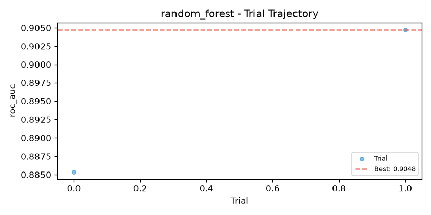
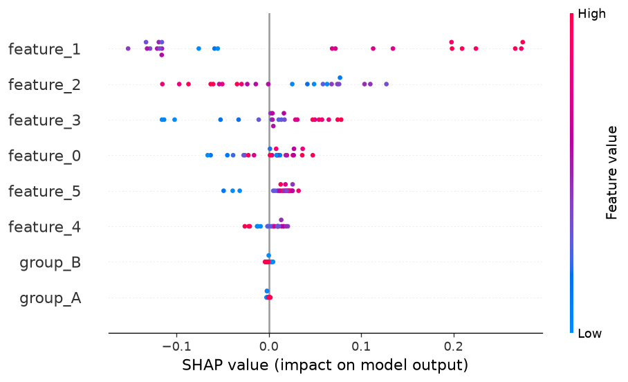
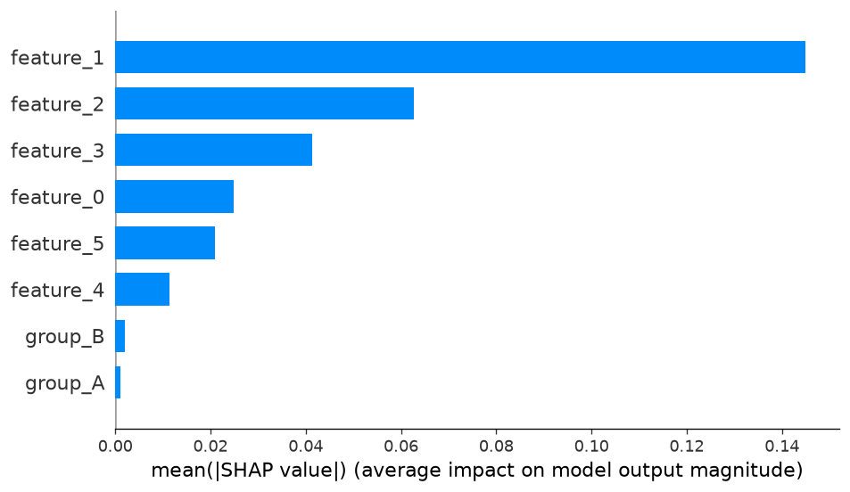
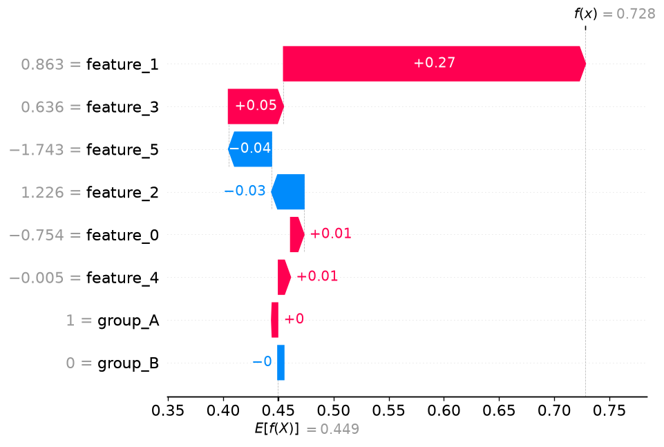

TabularX 实验报告
面向可解释性与可复现性的自动化表格建模
← 点击左右两侧或按键盘方向键翻页 →
可信审计总览
风险与发现汇总
| 阶段 | 级别 | 标题 | 证据依据 | 处置建议 |
|---|---|---|---|---|
| 画像 | medium | 疑似标识符特征 | 'feature_0' 唯一值比例为 100.0%。 | 确认预测时是否可得；通常应作为分组列或从模型特征中排除。 |
| 画像 | medium | 疑似标识符特征 | 'feature_1' 唯一值比例为 100.0%。 | 确认预测时是否可得；通常应作为分组列或从模型特征中排除。 |
| 画像 | medium | 疑似标识符特征 | 'feature_2' 唯一值比例为 100.0%。 | 确认预测时是否可得；通常应作为分组列或从模型特征中排除。 |
| 画像 | medium | 疑似标识符特征 | 'feature_3' 唯一值比例为 100.0%。 | 确认预测时是否可得；通常应作为分组列或从模型特征中排除。 |
| 画像 | medium | 疑似标识符特征 | 'feature_4' 唯一值比例为 100.0%。 | 确认预测时是否可得；通常应作为分组列或从模型特征中排除。 |
| 画像 | medium | 疑似标识符特征 | 'feature_5' 唯一值比例为 100.0%。 | 确认预测时是否可得；通常应作为分组列或从模型特征中排除。 |
| 预处理 | medium | 部分群体样本量偏小 | 1 个「群体 × 子集」组合样本数低于 20：['group=A@validation']。 | 样本量过小会让该群体的指标估计不稳定，解读时需谨慎。 |
审计链路
ID / 目标复制 / 目标代理 / 禁用特征] ProfileAudit --> ProfileRisk{画像风险等级} ProfileRisk -->|critical / high| DropCols[建议排除列
供预处理决策参考] ProfileRisk -->|info / low / medium| NoDrop[无高危排除建议] DropCols --> SplitAudit NoDrop --> SplitAudit[划分完整性审计
重复 / 实体泄漏 / 时间穿越] SplitAudit --> SplitRisk{划分风险等级} SplitRisk -->|critical| FixSplit[建议改用 group 或 temporal 切分] SplitRisk -->|info / medium| KeepSplit[划分方式可接受] FixSplit --> PreAudit KeepSplit --> PreAudit[预处理排除与分布审计
分组列 / 建议列排除，PSI / KS / TVD，群体覆盖] PreAudit --> ExcludeCols[实际排除列
不进入模型输入] ExcludeCols --> SearchProtocol[模型搜索评估协议
候选与 Voting 仅验证集比较] SearchProtocol --> LockModel[锁定验证集最优单模型] LockModel --> FinalTest[仅对锁定模型执行最终测试] FinalTest --> Ledger[结论并入统一报告与交付清单] classDef error fill:#f8d7da,stroke:#721c24,stroke-width:1px; classDef warning fill:#fff3cd,stroke:#856404,stroke-width:1px; classDef audit fill:#e8f4fd,stroke:#2471a3,stroke-width:1px; class DropCols,FixSplit,ExcludeCols warning; class ProfileAudit,SplitAudit,PreAudit,ProfileRisk,SplitRisk,SearchProtocol,LockModel,FinalTest,Ledger audit;
↑ 阶段 1（画像）、阶段 2（划分）、阶段 3（预处理）与阶段 4（模型搜索评估协议）的链路。候选模型与 Voting 仅按验证集比较；锁定模型后才执行最终测试评估。
TabularX 数据概况报告
① 摘要
输入
输出（结论）
关键发现
- 2 列建议标准化（scale_needed）
- 0 列存在缺失值（has_missing）
- 0 列为常数列、0 列为全空列（预处理器将丢弃）
- 0 列为高基数文本列
- 0 列分布偏斜（skewed，建议 log 变换或缩尾）
- 0 列高基数类别（high_cardinality，建议目标编码）
- 6 列疑似标识符（identifier_like，建议排除或作为分组列）
- 静态泄漏预检风险等级：medium
② 判断流程与证据
2.1 判断流程图
对 X 与 y 整体扫描] AuditStart --> AuditID{ID / 高唯一性检测} AuditID -->|列名命中 ID 模式，或唯一值比例 ≥ 阈值| AuditIDYes[标记 identifier_like
风险：疑似标识符特征] AuditID -->|否| AuditCopy AuditIDYes --> AuditCopy{目标复制 / 目标代理检测} AuditCopy -->|特征与目标逐行完全一致| CopyHit[严重：目标复制] AuditCopy -->|列名命中后验规则，或单特征判别力 ≥ 阈值| ProxyHit[高危：疑似目标代理特征] AuditCopy -->|否| AuditForbid CopyHit --> AuditForbid{用户禁用特征校验} ProxyHit --> AuditForbid AuditForbid -->|命中 forbidden_features| ForbidHit[严重：声明的禁用特征] AuditForbid -->|否| RiskSum ForbidHit --> RiskSum{汇总预检风险等级} RiskSum -->|critical / high| AuditHigh[预检高风险：给出建议排除列] RiskSum -->|medium| AuditMed[预检中风险：建议人工核验] RiskSum -->|info| AuditClean[预检通过：未发现泄漏特征] AuditHigh --> Done([完成：输出 DataProfile]) AuditMed --> Done AuditClean --> Done classDef error fill:#f8d7da,stroke:#721c24,stroke-width:1px; classDef warning fill:#fff3cd,stroke:#856404,stroke-width:1px; classDef audit fill:#e8f4fd,stroke:#2471a3,stroke-width:1px; class InvalidInput,EmptyData,LengthError,EmptyTarget,TaskError,CopyHit,ProxyHit,ForbidHit,AuditHigh error; class EmptyColumn,ConstantColumn,MissYes,ScaleYes,Skewed,HighCardYes,Imbalanced,AuditIDYes,AuditMed warning; class AuditStart,AuditID,AuditCopy,AuditForbid,RiskSum,AuditClean audit;
2.2 目标变量判断依据
- task_type_source =
user+auto— 用户手动指定分类任务；按唯一值数 2 细分为 binary
2.3 特征列判断依据（仅列特殊情况）
- col_type =
numeric— 列类型判定为 numeric - identifier_like =
100.00%— 唯一值占比为 100.00%，唯一率较高 - scale_rule =
|mean|>0.5 or std>1.5— |mean|=0.1436, std=1.7679，满足判据 → scale_needed
- col_type =
numeric— 列类型判定为 numeric - identifier_like =
100.00%— 唯一值占比为 100.00%，唯一率较高 - scale_rule =
|mean|>0.5 or std>1.5— |mean|=0.4965, std=1.4539，不满足判据 → 无需 scale
- col_type =
numeric— 列类型判定为 numeric - identifier_like =
100.00%— 唯一值占比为 100.00%，唯一率较高 - scale_rule =
|mean|>0.5 or std>1.5— |mean|=0.0113, std=1.4393，不满足判据 → 无需 scale
- col_type =
numeric— 列类型判定为 numeric - identifier_like =
100.00%— 唯一值占比为 100.00%，唯一率较高 - scale_rule =
|mean|>0.5 or std>1.5— |mean|=0.6021, std=1.6660，满足判据 → scale_needed
- col_type =
numeric— 列类型判定为 numeric - identifier_like =
100.00%— 唯一值占比为 100.00%，唯一率较高 - scale_rule =
|mean|>0.5 or std>1.5— |mean|=0.1154, std=1.0319，不满足判据 → 无需 scale
- col_type =
numeric— 列类型判定为 numeric - identifier_like =
100.00%— 唯一值占比为 100.00%，唯一率较高 - scale_rule =
|mean|>0.5 or std>1.5— |mean|=0.0014, std=1.0295，不满足判据 → 无需 scale
③ 详细描述性统计
目标变量
| 任务类型 | binary |
|---|---|
| 类别数 | 2 |
| 类别分布 | 0: 55.0% 1: 45.0% |
| 缺失率 | 0.00% |
特征列
| 列名 | 类型 | dtype | 缺失数 | 缺失率 | 唯一值 | 标签 | 均值 | 标准差 |
|---|---|---|---|---|---|---|---|---|
| feature_0 | numeric | float64 | 0 | 0.00% | 240 | numeric identifier_like scale_needed | -0.1436 | 1.7679 |
| feature_1 | numeric | float64 | 0 | 0.00% | 240 | numeric identifier_like | -0.4965 | 1.4539 |
| feature_2 | numeric | float64 | 0 | 0.00% | 240 | numeric identifier_like | -0.0113 | 1.4393 |
| feature_3 | numeric | float64 | 0 | 0.00% | 240 | numeric identifier_like scale_needed | -0.6021 | 1.6660 |
| feature_4 | numeric | float64 | 0 | 0.00% | 240 | numeric identifier_like | 0.1154 | 1.0319 |
| feature_5 | numeric | float64 | 0 | 0.00% | 240 | numeric identifier_like | 0.0014 | 1.0295 |
| group | categorical | str | 0 | 0.00% | 2 | categorical | — | — |
④ 数据安全与泄漏预检
4.1 固定检查项清单
| 检查项目 | 状态 | 检查结果与依据 |
|---|---|---|
| 目标复制检测 | 通过 | 未发现特征与目标逐行一致。 |
| 目标代理特征检测 | 通过 | 未发现超过阈值的疑似目标代理特征。 |
| ID/高唯一性字段检测 | 发现风险 | 发现 6 项：feature_0、feature_1、feature_2、feature_3、feature_4、feature_5。 |
| 用户禁用特征校验 | 通过 | 未发现包含声明的非法特征。 |
4.2 详细风险与特征发现
关联列：feature_0
证据依据：'feature_0' 唯一值比例为 100.0%。
处置建议：确认预测时是否可得；通常应作为分组列或从模型特征中排除。
关联列：feature_1
证据依据：'feature_1' 唯一值比例为 100.0%。
处置建议：确认预测时是否可得；通常应作为分组列或从模型特征中排除。
关联列：feature_2
证据依据：'feature_2' 唯一值比例为 100.0%。
处置建议：确认预测时是否可得；通常应作为分组列或从模型特征中排除。
关联列：feature_3
证据依据：'feature_3' 唯一值比例为 100.0%。
处置建议：确认预测时是否可得；通常应作为分组列或从模型特征中排除。
关联列：feature_4
证据依据：'feature_4' 唯一值比例为 100.0%。
处置建议：确认预测时是否可得；通常应作为分组列或从模型特征中排除。
关联列：feature_5
证据依据：'feature_5' 唯一值比例为 100.0%。
处置建议：确认预测时是否可得；通常应作为分组列或从模型特征中排除。
TabularX 数据划分报告
① 摘要
输入
输出
关键结论
42。
② 判断流程与证据
2.1 判断流程图
2.2 判断依据
binary
— 目标任务类型为 binary，使用分层采样保证各集类别分布一致。
42
— 随机种子 = 42，保证划分可复现。
0.6
— 训练集 144 样本，占 60.00%
0.2
— 验证集 48 样本，占 20.00%
0.2
— 测试集 48 样本，占 20.00%
0.0208
— 三集间最大类别比例差异 = 0.0208（差异较小，分布一致 ✅）
③ 划分完整性审计
3.1 固定检查项清单
| 检查项目 | 状态 | 检查结果与依据 |
|---|---|---|
| 跨集合重复样本 | 通过 | 三个集合之间没有重复的原始特征行。 |
| 实体分组泄漏 | 未执行 | 未声明 group_column，无法判断同一实体是否跨集合出现。若数据存在患者、用户或设备等实体依赖，建议声明该列。 |
| 时间穿越 | 未执行 | 未声明 time_column，无法判断训练、验证与测试的时间顺序是否合规。若数据存在时间依赖，建议声明该列。 |
TabularX 数据预处理报告
① 摘要
输入 / 输出
关键结论
没有列因审计建议被排除。
特征数量从 7 变为 8 （增加 了 1 列）。
② 判断流程
分组列 + 画像建议列] AuditDrop --> ColLoop[阶段 3：逐列处理] ColLoop --> AuditExcluded{在审计排除集合中？} AuditExcluded -->|是| DropAudit[排除此列
记录 dropped_by_audit 与原因] AuditExcluded -->|否| EmptyCol{常数列或全空列？} EmptyCol -->|是| Drop[丢弃此列] EmptyCol -->|否| TextCol{文本列？} TextCol -->|是，handle_text=drop| Drop TextCol -->|是，handle_text=keep| TextError[报错：暂不支持 NLP] TextCol -->|否| DtCol{日期列？} DtCol -->|handle_datetime=drop| Drop DtCol -->|handle_datetime=keep| Keep[原样保留] DtCol -->|handle_datetime=extract| DtExtract[提取年/月/日数值特征] Drop --> NextCol DropAudit --> NextCol TextError --> NextCol Keep --> NextCol DtExtract --> NextCol DtCol -->|否| NumCol{数值列？} NumCol -->|是| NumImpute[填补缺失值] NumImpute --> ScaleQuery{需要标准化？} ScaleQuery -->|是| SkewQuery1{分布偏斜？} ScaleQuery -->|否| SkewQuery2{分布偏斜？} SkewQuery1 -->|是| YeoJohnson[Yeo-Johnson 变换
兼作标准化] SkewQuery1 -->|否| Scale[标准化] SkewQuery2 -->|是| YeoJohnson2[Yeo-Johnson 变换] SkewQuery2 -->|否| NoOp[无需处理] YeoJohnson --> NextCol Scale --> NextCol YeoJohnson2 --> NextCol NoOp --> NextCol NumCol -->|否| BoolCol{布尔列？} BoolCol -->|是| BoolProc["填补缺失 转 int(0/1)"] BoolProc --> NextCol BoolCol -->|否| CateCol{类别列？} CateCol -->|是| CateImpute[填补缺失值] CateImpute --> HighCard{高基数？} HighCard -->|unique > max_onehot_categories| HighEnc{高基数编码} HighEnc -->|target| TargetEncode[目标编码] HighEnc -->|frequency| FreqEncode[频率编码] HighCard -->|否| LowEnc{低基数编码} LowEnc -->|onehot| OneHot[OneHot 编码] LowEnc -->|label| LabelEncode[标签编码] TargetEncode --> NextCol FreqEncode --> NextCol OneHot --> NextCol LabelEncode --> NextCol CateCol -->|否| Unknown[未知类型 原样保留] Unknown --> NextCol NextCol{还有下一列？} NextCol -->|是| ColLoop NextCol -->|否| DriftAudit[阶段 4：分布漂移审计
train vs valid / train vs test] DriftAudit --> KsGate{KS 是否超过同样本量临界值？} KsGate -->|否| DriftInfo[判为 info：差异在抽样噪声内] KsGate -->|是| PsiGate{PSI / TVD 等级} PsiGate -->|≥ high 阈值| DriftHigh[判为 high：记录漂移特征] PsiGate -->|≥ warning 阈值| DriftMed[判为 medium] PsiGate -->|低于阈值| DriftLow[判为 info] DriftHigh --> GroupAudit DriftMed --> GroupAudit DriftLow --> GroupAudit DriftInfo --> GroupAudit GroupAudit[阶段 5：敏感群体覆盖审计] --> Done([完成：输出 PreprocessedData + audit]) classDef error fill:#f8d7da,stroke:#721c24,stroke-width:1px; classDef decision fill:#fff3cd,stroke:#856404,stroke-width:1px; classDef audit fill:#e8f4fd,stroke:#2471a3,stroke-width:1px; classDef warning fill:#fff3cd,stroke:#856404,stroke-width:1px; class Drop,TextError error; class DropAudit,DriftHigh warning; class EmptyCol,TextCol,DtCol,NumCol,BoolCol,CateCol,ScaleQuery,SkewQuery1,SkewQuery2,HighCard,HighEnc,LowEnc,AuditExcluded,KsGate,PsiGate decision; class AuditDrop,DriftAudit,DriftInfo,DriftMed,DriftLow,GroupAudit audit;
③ 逐列变换记录
总计 7 列 · 标准化 2 列 · 填补 0 列 · 编码 0 列 · 丢弃 0 列
| 列名 | 原始 dtype | 原始唯一值 | 变换动作 | 输出特征数 | 说明 |
|---|---|---|---|---|---|
| feature_0 | float64 |
240 | standard_scale | 1 | |
| feature_1 | float64 |
240 | 保留 | 1 | |
| feature_2 | float64 |
240 | 保留 | 1 | |
| feature_3 | float64 |
240 | standard_scale | 1 | |
| feature_4 | float64 |
240 | 保留 | 1 | |
| feature_5 | float64 |
240 | 保留 | 1 | |
| group | str |
2 | onehot(2) | 2 |
④ 列映射关系
仅展示有变化的列（被丢弃、展开、重命名或提取）。未列出的列原样保留。
| 原始列名 | 变换后列名 | 输出特征数 | 状态 |
|---|---|---|---|
| group | group_A group_B | 2 | 展开 |
⑤ 分布漂移与群体覆盖审计
5.1 固定检查项清单
| 检查项目 | 状态 | 检查结果与依据 |
|---|---|---|
| 特征分布漂移 | 通过 | 7 个特征在两两方向上漂移均未超过高危阈值。 |
| 敏感群体覆盖 | 发现风险 | 0 个「群体 × 子集」组合样本数为 0，1 个组合低于最小样本量 20。 |
5.2 特征分布漂移
共 14 条记录（每个特征两个对比方向）· 高危 0 条 · 中危 1 条 · 判定前先校验同样本量下的 KS 显著性，避免小样本噪声被当作漂移
| 特征 | 类型 | 对比方向 | PSI | KS | TVD | 未见类别率 | 判定 | 说明 |
|---|---|---|---|---|---|---|---|---|
| group | categorical | train_vs_validation | — | — | 0.2014 | 0.0000 | medium | 类别分布有变化但幅度有限，建议关注。 |
5.3 敏感群体覆盖
| 敏感特征 | 群体 | 子集 | 样本数 | 占比 | 判定 |
|---|---|---|---|---|---|
| group | A | train | 77 | 53.47% | info |
| group | B | train | 67 | 46.53% | info |
| group | A | validation | 16 | 33.33% | high |
| group | B | validation | 32 | 66.67% | info |
| group | A | test | 27 | 56.25% | info |
| group | B | test | 21 | 43.75% | info |
5.4 风险详情
证据依据：1 个「群体 × 子集」组合样本数低于 20：['group=A@validation']。
处置建议：样本量过小会让该群体的指标估计不稳定，解读时需谨慎。
⑥ 数据概况
输出特征名
feature_0 feature_1 feature_2 feature_3 feature_4 feature_5 group_A group_B
训练集描述性统计
| 列名 | 均值 | 标准差 | 最小值 | 最大值 |
|---|---|---|---|---|
| feature_0 | 0.0000 | 1.0035 | -2.8669 | 2.2638 |
| feature_1 | -0.4434 | 1.5536 | -3.9592 | 4.1057 |
| feature_2 | -0.0978 | 1.4679 | -3.8080 | 3.9449 |
| feature_3 | 0.0000 | 1.0035 | -2.8869 | 2.5046 |
| feature_4 | 0.0977 | 1.0955 | -2.2032 | 2.6997 |
| feature_5 | -0.0657 | 1.0704 | -2.6098 | 3.1049 |
| group_A | 0.5347 | 0.5005 | 0.0000 | 1.0000 |
| group_B | 0.4653 | 0.5005 | 0.0000 | 1.0000 |
选模依据为验证集指标。仅锁定的单模型提供最终测试分数；其余候选及 Voting 未进行测试评估，缺省值不代表零分。
TabularX 模型搜索报告
① 摘要
输入
配置
| 任务类型 | binary |
|---|---|
| 主指标 | roc_auc |
| 优化方向 | maximize |
② 整体流程图
确定模型列表] subgraph Tuning[并行调参] M1["模型 1
Optuna x n_trials"] M2["模型 2
Optuna x n_trials"] M3["..."] end Parse --> Tuning M1 & M2 & M3 --> Retrain["训练集拟合
验证集评估"] Retrain --> Rank[按验证集主指标排序] Rank --> Best[最优单模型] Rank --> Vote["构建 Voting 组合
(Top-K)"] Vote --> VoteEval[评估 Voting
仅验证集] Best --> Lock[锁定单模型及参数] Lock --> Final[训练与验证集合并拟合
仅锁定模型执行最终测试] Final --> Output[输出 ModelSearchResult] VoteEval --> Output Output --> Report[生成 HTML 报告]
④ 评估协议审计
锁定模型： random_forest
最终测试范围： 仅锁定的单模型
候选模型测试指标数： 0
Voting 测试评估： 未执行
| 检查项 | 状态 | 结果 |
|---|---|---|
| 选模依据为验证集主指标 | 通过 | roc_auc（maximize）。 |
| 最终测试前锁定单模型 | 通过 | 锁定模型：random_forest；先于测试评估：True。 |
| 未锁定候选没有测试指标 | 通过 | 数量：0。 |
| Voting 仅用于验证集比较 | 通过 | 未执行测试评估。 |
| 最终测试评估仅针对锁定模型 | 通过 | 锁定模型测试指标已生成。 |
| 候选搜索与 Voting 阻止测试集访问 | 通过 | 使用运行时访问保护视图。 |
④ 最优模型：random_forest
3.1 三集表现
| 数据集 | accuracy | balanced_accuracy | f1 | f1_macro | roc_auc | precision | recall |
|---|---|---|---|---|---|---|---|
| 训练集 | 0.8542 | 0.8480 | 0.8293 | 0.8510 | 0.9515 | 0.8793 | 0.7846 |
| 验证集 | 0.7917 | 0.7778 | 0.7368 | 0.7822 | 0.9048 | 0.8235 | 0.6667 |
| 测试集 | 0.8750 | 0.8706 | 0.8571 | 0.8730 | 0.9301 | 0.9000 | 0.8182 |
3.2 最佳参数
n_estimatorsmax_depthmin_samples_splitmin_samples_leafmax_featuresccp_alpha3.3 分类评估图


④ 模型排名
4.1 主指标对比（roc_auc）
4.2 详细排名表
| 排名 | 模型 | 状态 | roc_auc（训练集） | roc_auc（验证集） | roc_auc（测试集） | 调参耗时 | 操作 |
|---|---|---|---|---|---|---|---|
| 1 | random_forest 最优 | success | 0.9515 | 0.9048 | 0.9301 | 0.7s | 详情 |
⑦ 可解释性与公平性
模型详情：random_forest
① 基本信息
② 调参轨迹

③ 分类评估图
④ 三集表现对比
| 数据集 | accuracy | balanced_accuracy | f1 | f1_macro | roc_auc | precision | recall |
|---|---|---|---|---|---|---|---|
| 训练集 | 0.8542 | 0.8480 | 0.8293 | 0.8510 | 0.9515 | 0.8793 | 0.7846 |
| 验证集 | 0.7917 | 0.7778 | 0.7368 | 0.7822 | 0.9048 | 0.8235 | 0.6667 |
| 测试集 | 0.8750 | 0.8706 | 0.8571 | 0.8730 | 0.9301 | 0.9000 | 0.8182 |
最佳参数
n_estimatorsmax_depthmin_samples_splitmin_samples_leafmax_featuresccp_alphaTabularX 可解释性与公平性报告
① 摘要
输入
结论
② 整体流程图
对最优模型] SHAPBlock --> Importance[特征重要性排序
Top-10] SHAPBlock --> Viz[SHAP 可视化
beeswarm / 柱状图 / waterfall] SHAPBlock --> Direction[特征贡献方向分析] Input --> FairnessBlock[公平性评估
对每个敏感特征] FairnessBlock --> Resolve[查找 column_mappings
解析预处理后列名] Resolve --> Dropped{已被丢弃？} Dropped -->|是| Skip[跳过并提示] Dropped -->|否| Split[按子组拆分测试集] Split --> GroupMetrics[计算各子组指标
正类预测率 / 准确率 / TPR / FPR] GroupMetrics --> Diff[计算公平性差异
Demographic Parity
Equalized Odds TPR/FPR] Diff --> Threshold{超出配置阈值？} Threshold -->|是| Warn[标记潜在偏见] Threshold -->|否| Pass[已计算指标未超阈值] Diff -->|指标未定义| Unknown[无法判断并说明原因] SHAPBlock & FairnessBlock --> Report[生成可解释性与公平性报告]
③ SHAP 可解释性分析
1.1 基本信息
最优模型 random_forest 在 24 个测试样本上进行了 SHAP 解释。 前 10 个特征累计解释了约 100.0% 的模型决策， 说明模型决策主要受少数关键特征驱动。
1.2 特征重要性（Top-10）
| 排名 | 特征 | 平均 |SHAP| | 解释力占比 | 均值 | 标准差 | 最小值 | 最大值 |
|---|---|---|---|---|---|---|---|
| 1 | feature_1 | 0.1448 | 46.9% | 0.0247 | 0.1569 | -0.1524 | 0.2751 |
| 2 | feature_2 | 0.0626 | 20.3% | 0.0103 | 0.0698 | -0.1152 | 0.1275 |
| 3 | feature_3 | 0.0413 | 13.4% | 0.0057 | 0.0538 | -0.1157 | 0.0785 |
| 4 | feature_0 | 0.0249 | 8.1% | -0.0004 | 0.0305 | -0.0662 | 0.0477 |
| 5 | feature_5 | 0.0209 | 6.8% | 0.0109 | 0.0204 | -0.0489 | 0.0323 |
| 6 | feature_4 | 0.0113 | 3.7% | 0.0027 | 0.0129 | -0.0259 | 0.0207 |
| 7 | group_B | 0.0020 | 0.6% | -0.0003 | 0.0024 | -0.0040 | 0.0046 |
| 8 | group_A | 0.0011 | 0.4% | -0.0005 | 0.0012 | -0.0024 | 0.0018 |
1.3 SHAP 可视化



1.4 特征贡献方向摘要
下表列出 Top-5 特征对预测的总体影响方向。均值 > 0 表示该特征值越高越推动预测向正类（或更高预测值）， 均值 < 0 表示该特征值越高越推动预测向负类（或更低预测值）。
| 特征 | 平均 SHAP 值 | 主导方向 | 影响描述 |
|---|---|---|---|
| feature_1 | 0.0247 | 正向 | 值越大 → 正类概率越高 |
| feature_2 | 0.0103 | 正向 | 值越大 → 正类概率越高 |
| feature_3 | 0.0057 | 正向 | 值越大 → 正类概率越高 |
| feature_0 | -0.0004 | 双向 | 影响方向因样本而异（均值接近零） |
| feature_5 | 0.0109 | 正向 | 值越大 → 正类概率越高 |
④ 公平性评估
4.1 配置
| 敏感特征 | group |
|---|---|
| 评估指标 | Demographic Parity, Equalized Odds (TPR / FPR) |
| 差异阈值 | 由 FairnessConfig.dp_threshold / eo_tpr_threshold / eo_fpr_threshold 配置 |
4.2 敏感特征：group
各子组指标
| 子组 | 样本数 | 正类预测率 | 准确率 | TPR（真正率） | FPR（假正率） |
|---|---|---|---|---|---|
| B | 21 | 33.33% | 85.71% | 75.00% | 7.69% |
| A | 27 | 48.15% | 88.89% | 85.71% | 7.69% |
公平性差异
少于两个分组，或任一分组缺少对应真实类别时，相关差异无法计算；不以零代替。
| 指标 | 差异值 | 是否超阈值 | 说明 |
|---|---|---|---|
| Demographic Parity | 0.1481 | 是 | 各子组正类预测率的最大差异 |
| Equalized Odds (TPR) | 0.1071 | 是 | 各子组真正率的最大差异 |
| Equalized Odds (FPR) | 0.0000 | 否 | 各子组假正率的最大差异 |
模型在特征 group 上存在超过阈值的公平性差异， 建议进一步审查模型对该特征的依赖情况。
报告结束
本报告由 TabularX 自动生成。
所有模型训练、评估、可解释性分析及公平性审计均在本地执行。
如需复现，请保存完整的实验输出目录。